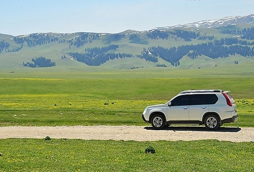

-

自驾游建议行车路线
以中山陵停车场为终点，各方向自驾游建议行车路线
沪蓉高速（G42）：沪宁高速连接线（南京市区方向）——中山陵园风景区陵东路匝道——陵东路——灵... -
钟山风景区停车场分布
目前，风景区内共有16个停车场，中山陵停车场（可停530辆）、梅花谷停车场（可停53辆）、灵谷寺停车场（可停221辆）、紫霞湖停车场（可停70辆）、音乐台...
-
地铁线路
明孝陵景区：乘坐地铁2号线，到苜蓿园站下车，步行至明孝陵停车场换乘景区观光车或沿木栈道步行进入景区。
中山陵景区：乘坐地铁2号线，到苜蓿园站或... -
公交接驳站点
1、卫桥陵园路入口接驳：公交20路、203路（明孝陵停车场站）；公交5路、9路、36路、34路、55路、49路、201路、202路（卫桥站）。
2、下马坊博爱路入... -
景区观光车线路
1号线：梅花谷停车场（苜蓿园地铁站）—四方城—美龄宫（明孝陵博物馆）—海底世界—中山陵南站
1号线（区间）：梅花谷停车场（苜蓿园地铁站）—海... -
南京环紫金山绿道平面图及沿...
环紫金山绿道南线和东线，全长22.9公里。南线始于琵琶湖公园入口，止于体育运动公园，东线始于紫金山东入口（仙林大道交叉口），沿环陵路西侧至岔路口。
...